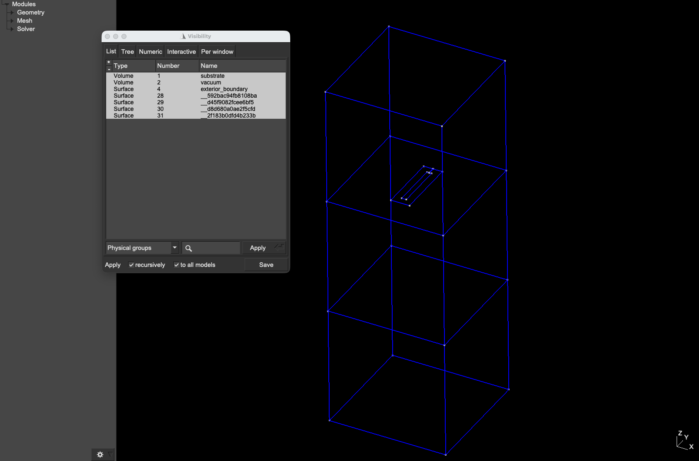

Solid Models with Metadata (Experimental)
DeviceLayout.SolidModelsExperimental is an experimental module that enables users to add rich metadata to a SolidModel and export it to a JSON file after rendering. More specifically, this module makes it possible to make explicit selections of terminals, ports, and other surfaces of interest by marking them with point-like locators. It also introduces a new way of specifying stackups and layers (and the CAD kernel operations on them) that is more natural and higher level than the existing way offered by the library.
At this time, the metadata types available and the information they carry are unapologetically geared towards Palace simulations, but other simulation backends may be added in the future.
Layer references, locators, and source stacks
First, this module introduces three new types that replace what is currently done using SemanticMeta and ProcessTechnology in the main library:
SourceLayer. This is a natural extension ofSemanticMeta. It has a level, but also includes aMaterial(an enum with membersMETAL,DIELECTRIC, orNULL) and a thickness. It corresponds naturally to a grouping of objects that can be added or removed by a single fabrication step, e.g. when depositing a film or etching pockets. Each source layer can be configured to appear or not appear in its eventual solid model or GDS destination (for the latter, an explicitGDSMetacan be passed). The "source" qualifier refers to the fact that these are the layers into which we'llplace!entities (see below). Subsequent CAD kernel operations can create new ones, which we refer to as "generated" layers.SourceStack. The set of allSourceLayers in a model, keyed by their name, plus a map of level indices to $z$-coordinates.LayerRef. ASymbolwrapper (and subtype ofDeviceLayout.Meta) used to signal whichSourceLayerwe're placing an entity into.
As a simple example, suppose we want to create a model containing a $500 \, \mu\text{m}$-thick dielectric substrate with $500 \, \mu\text{m}$ of vacuum below and above, with a mock Imon-style transmon in the middle. We'll place the Imon shape via its negative (i.e. the gaps between the island and ground) and compute the positive metal via booleans. We'll also add a simple lumped port to model the junction in Palace. The stack for this is
using DeviceLayout
using DeviceLayout.PreferredUnits
using DeviceLayout.SolidModelsExperimental:
DIELECTRIC,
METAL,
NULL,
SourceLayer,
SourceStack
stack = SourceStack(
:metal_neg => SourceLayer(NULL; level=1, gds_meta=GDSMeta(10, 0)),
:metal_pos => SourceLayer(METAL; level=1, gds_meta=nothing),
:ports => SourceLayer(NULL; level=1, gds_meta=nothing),
:chip_outline => SourceLayer(NULL; level=1, gds_meta=GDSMeta(100, 0)),
:substrate => SourceLayer(
DIELECTRIC;
level=1,
thickness=-500μm,
gds_meta=nothing
),
:bounding_volume => SourceLayer(
NULL;
level=0 => 1, # shorthand for "this layer spans levels 0 to 1, with
offset=(-500μm, 500μm), # an offset of -500μm from the source layer and +500μm
gds_meta=nothing # from the destination layer
);
levels=(0 => -500μm, 1 => 0μm)
)where we defined the bottom and top surfaces of the substrate as the "levels" 0 and 1 in the stack (at $z$ coordinates $-500 \, \mu\text{m}$ and $0 \, \mu\text{m}$, respectively). Note that we've assigned a explicit gds_metas to the :metal_neg and :chip_outline layers – these will be the layer numbers/datatypes that entities will be mapped to when we render to GDS; all other layers are only used for simulations so we just set gds_meta=nothing.
CAD kernel operations
In addition to declaring the source stack, we must also specify the CAD operations that are needed to build the full 3D model.
using DeviceLayout.SolidModelsExperimental:
Cut,
Extrude,
GetBoundary,
Remove,
SolidModelTarget
# Declare CAD operations in the order that they will be performed
ops = [
Extrude(:substrate), # extrude :substrate layer in-place
Extrude(:bounding_volume),
# Subtract metal_neg from chip_outline and assign result to metal_pos
Cut(:metal_pos, :chip_outline, :metal_neg),
Cut(:vacuum, :bounding_volume, :substrate),
# Get the 2D boundary of bounding_volume and assign the result to exterior_boundary
GetBoundary(:exterior_boundary, :bounding_volume),
# Remove only the group: its entities also bound exterior_boundary
Remove(:bounding_volume; remove_entities=false)
]
# Complete the specification of the SolidModel target: the stack, plus the CAD operations.
# This is what we'll pass to render!, along with the schematic itself
target = SolidModelTarget(stack, ops)In this case we only needed a handful of operation types; see the API documentation for a full list.
Placements and selections
To place entities into this stack we call place! as usual but pass a LayerRef as the metadata, which points each placement to a SourceLayer. And to mark surfaces for selection, we place Locators with the appropriate type of metadata (Terminal, Ground, etc.):
using DeviceLayout.SolidModelsExperimental:
Ground,
LayerRef,
Locator,
LumpedPort,
Terminal
cs = CoordinateSystem("imon", μm)
# Define the center island of the Imon, the transmon cutout, and their difference
# (the gaps between the island and ground). The gaps are what will actually be rendered
island = centered(Rectangle(20μm, 200μm))
cutout = offset(island, 30μm)
gaps = difference2d(cutout, island)
place!(cs, gaps, LayerRef(:metal_neg))
# Place a locator at the origin to select a Terminal from :metal_pos called "island".
# This will pick out the Imon island because it's the entity in the final model that
# contains the locator
place!(cs, Locator(0μm, 0μm), Terminal(:metal_pos, "island"))
# Define the lumped port for simulation. We'll style the port rectangle with a WithDirection
# pointing North, as this is the direction of current flow we expect
port = Align.above(centered(Rectangle(2μm, 30μm)), island; centered=true) |> WithDirection(90°)
place!(cs, port, LayerRef(:ports))
# Place a locator centered on the port
place!(cs, Locator(center(bounds(port))), LumpedPort(:ports, "jj"))
# Define the cross section of the substrate and bounding volume. In this case
# they're the same, as we're not interested in fully surrounding the substrate with
# vacuum
box = centered(Rectangle(500μm, 500μm))
place!(cs, box, LayerRef(:chip_outline))
place!(cs, box, LayerRef(:substrate))
place!(cs, box, LayerRef(:bounding_volume))
# Then place another locator far away from the Imon to mark the ground plane
place!(cs, Locator(100μm, 0μm), Ground(:metal_pos))See the API documentation for a the complete set of locator metadata types (i.e. the types of selections that can be made).
Rendering the model and saving its metadata
Then finally, to render the model, we wrap our simple CoordinateSystem in a component and call render! using the target we defined:
using DeviceLayout.SchematicDrivenLayout
using DeviceLayout.SolidModels: SolidModel
graph = SchematicGraph("imon")
add_node!(graph, BasicComponent(cs))
sch = check!(plan(graph; log_dir=nothing))
sm = SolidModel("imon"; overwrite=true)
metadata = render!(sm, sch, target) # returns the metadata as a Dict
DeviceLayout.save("model.xao", sm)Here's a snapshot of the resulting model viewed through the Gmsh GUI:

We can save the metadata to disk if we want to use it later to build Palace configurations:
using JSON
open("sm_metadata.json", "w") do io
JSON.print(io, metadata, 4)
endAn abriged version of the metadata file is shown below to illustrate the structure of the data and the information that gets recorded:
{
"metadata": {
"schema_version": "1.0.0",
"length_units": "um",
"assembly": { "levels": { "0": -500.0, "1": 0.0 } }
},
"physical_groups": {
"substrate": { "dim": 3, "tag": 1 },
"vacuum": { "dim": 3, "tag": 2 },
"exterior_boundary": { "dim": 2, "tag": 4 },
"__592bac94fb8108ba": { "dim": 2, "tag": 28 },
"__d45f9082fcee6bf5": { "dim": 2, "tag": 29 },
"__d8d680a0ae2f5cfd": { "dim": 2, "tag": 30 }
},
"layers": {
"metal_pos": {
"type": "source", "dim": 2, "level": 1, "offset": 0.0, "thickness": 0.0,
"pgs": ["__592bac94fb8108ba", "__d45f9082fcee6bf5"]
},
"substrate": {
"type": "source", "dim": 3, "level": 1, "offset": 0.0, "thickness": -500.0,
"pgs": ["substrate"]
},
"vacuum": { "type": "generated", "dim": 3, "pgs": ["vacuum"] },
"exterior_boundary": { "type": "generated", "dim": 2, "pgs": ["exterior_boundary"] }
},
"selections": {
"ports": {
"imon.jj": {
"type": "LumpedPort", "name": "imon.jj", "index": 1, "layer": "ports",
"direction": [0.0, 1.0, 0.0],
"pgs": ["__d8d680a0ae2f5cfd"]
}
},
"terminals": {
"METAL_CC__592bac94fb8108ba": {
"locators": ["imon.island"],
"pgs": ["__592bac94fb8108ba"]
}
},
"ground": {
"METAL_CC__d45f9082fcee6bf5": { "pgs": ["__d45f9082fcee6bf5"] }
},
"tagged": {}
}
}This file can be queried by downstream consumers to assemble Palace configurations, e.g. by fetching all physical group tags associated with layer substrate in order add an entry to Domains.Materials. It can likewise be used to make sense of Palace postprocessing results by looking up the semantic meaning of, say, port or terminal entries. The crucial benefit of all of this is that we've offloaded all of the information about a solid model that is necessary to configure simulations from the in-memory SolidModel to a compact file on disk, making it possible to reuse meshes long after the Julia process that generated them is gone.
Note that the names of selections made inside the Imon coordinate system were automatically prefixed with "imon."; this is to ensure all selections made throughout a schematic get unique names. The prefix is the ID of the component's node in the schematic node, which defaults to the component's name. In this case, it's simply the coordinate system's name, i.e. "imon".
We can also render the schematic to a Cell for GDS export:
cell = Cell("artwork", μm)
render!(cell, cs, stack)Each layer is rendered to its gds_meta.
Migrating from the legacy API
To migrate components and other code to this new API, replace SemanticMeta with LayerRef, add locators, and build the SourceStack and SolidModelTarget. Entities marked with SemanticMeta are ignored by this new rendering pipeline, so a schematic that mixes ported and unported components can still be rendered with it – the unported components won't show up in the model. Similarly, the legacy pipeline ignores entities marked with LayerRef or LocatorMeta. This bi-directional compatibility makes it possible to migrate a complex component library gradually, one component at a time, so that once everything has been ported and validated the dead code can simply be removed.